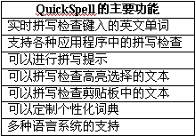
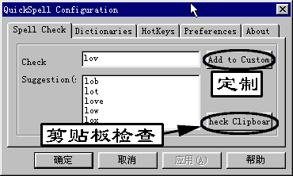

|
|
| 当前位置：电脑报电子版 > 1999 年 > 47 期 > 软件世界 > QuickSpell——实时英文拼写检查 |
| 《 QuickSpell——实时英文拼写检查 》 |
| 对于我们初学英语的朋友，写英文文章的时候，将单词拼错是常常发生的事情，而要由自己将这些错误检查出来，也非常困难。虽然Word97等软件提供了英文拼写检查，但只是针对在Word编辑窗口中的文本，如果你是在网页中在线填写某些英文信息或者使用ICQ发送英文信息，使用Word来进行拼写检查就非常不方便了。  现在，我们这些只会半吊子英文的人不用害怕了，使用QuickSpell，就可以让我们写的英文信不再错误百出。如果配合上《金山词霸》等某些电子词典的汉译英功能，你的英文水平即使较差，也可以写一写英文文章（如表）。 下载和安装 QuickSpell是一个共享软件，可以从网址：http@www.fornada.com/download/qspell131.exe下载它试用版，该软件的下载文件大小为2.4MB。程序安装完成后，默认是开机自动启动，也从开始菜单的“程序/QuickSpell”项中启动。程序启动后，将驻留内存在后台监视键盘输入，我们可以从任务栏中显示时间的系统托盘中看到QuickSpell的状态图标（是一个S形的图标）。实时拼写检查 启动QuickSpell程序后，当我们在键盘上的击键都在该程序的监视中，当键入的字符显示到屏幕上的时候，QuickSpell就开始检查。也就是说，不论我们在网页输入表单中、在程序对话窗口的文本输入框中、在文本编辑窗口中输入任何字符，QuickSpell都将进行检查。检查到一个词的第二个字符，程序即开始提示是否拼写正确。例如我们输入“love”这个单词，当键入到第二个字母“o”的时候，QuickSpell就开始提示现在输入的“lo”两个字符是错误的拼写。“lo”两个字符不是正确的英文单词，QuickSpell就在光标右上角显示一个红色的标记，表示刚才输入的“lo”是错误的单词。如果你将这个单词输完，到最后一个字母“e”的时候，QuickSpell将显示出一个绿色的标记，表示刚才输入的单词“love”正确。这样，当你开始输入一个单词后，QuickSpell将随时提醒你，这个单词现在是不是一个正确的单词。当然，如果是一些专有名词如BeiJing之类，它也会提示不正确，这时可以不用管它，但如果是通用的单词，则必须再看一下是否拼错。详细检查指定单词的拼写 提示某个单词的拼写：当输入单词前面部分，后面部分不知道如何拼的时候，可以按“Ctrl＋S”键，这时QuickSpell将给出一个菜单提示，表示可能的拼法。这时候你就可以在其中选择合适的拼法。自动选择正确的单词拼法：如果某个单词的后面部分拼写不出的时候，按“Ctrl＋R”键，QuickSpell将自动上屏一个它认为是最合适的单词拼法。当然，如果你认为不是你要的单词，可以退回去用“Ctrl＋S”来手动选择。 拼写检查高亮选择的单词：如果是已经输入好的单词，将该单词高亮选择（一般使用鼠标拖动，或者按住“Shift”键然后再按方向键），然后按“Ctrl＋T”，QuickSpell即可对该单词进行拼写检查。如果选择的是一段英文文本，则程序将逐个进行检查。 暂停拼写检查：按“Ctrl＋T”键则暂停拼写检查。 手动检查单词的拼写  点击QuickSpell任务栏中的状态图标，然后可以在弹出的窗口（如图）中的“Check”栏输入某个英文单词，按回车，程序即可检查出该单词是否拼写正确。如果复制了一段英文文本在剪贴板中，点击图示窗口中的“Check Clipboard”按钮，程序将对剪贴板中的英文单词进行逐个检查。 另外，在这个窗口中，还可以将新的单词加入到程序词典中。 其他设置 根据需要，还可以对程序进行某些设置，例如添加你自己的词典文件、设置拼写检查的快捷键以及是否自动启动等。(重庆 楠竹) |
| 下载本期推荐软件 | 页 首 |
| 《电脑报》版权所有，电脑报网站编辑部设计制作发布 |